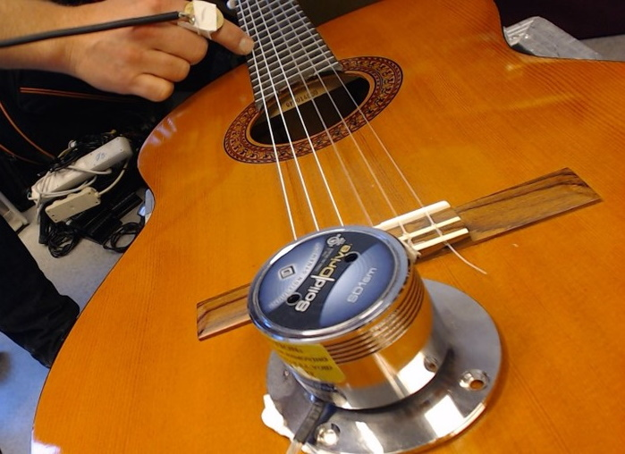

Reflection Substantiation
Reflection 1/10
We have done some more experiments on what we thought would be highly predictable resonating objects and it seems some lessons are learned. For these experiments, we mounted the microphone on a finger so that we could probe different parts of the object. The exciter transducer was mounted stationary on the object. Previously, we had been doing some tests with beams of polycarbonate, thinking that the beams would ne highly predictable. Then again, in our experience, they seemed to have less interesting properties than plates (as expected, with vibration nodes in just one dimension), but also still being somewhat unpredictable. For this reason we turned to resonating strings in a music instrument, an object that we thought we would have a clear understanding of. The harmonics of a string are well described, for an introduction, see: https://en.wikipedia.org/wiki/String_harmonic. We did, however encounter some interesting deviations from what we could expect from an ideal string. Some of the partials was easily accessible, although not on the exact physical position where one might initially expect. Oftentimes a slight offset in position was needed with respect to the mathematical subdivision, although the activation point was not symmetrical around the mathematical subdivision. Other partials was not accessible, or they were replaced by higher partials within the same ratio (1/3 being replaced by 1/6). Resonances corresponding to the remaining string length did also occur, as in line 6) of the illustration. Finally, we also experienced other resonance potentials not intuitively related to the position on the string where we put the microphone.
Dividing a string by a light touch of the finger, as line in 3) of the illustration, forces the string to vibrate on the corresponding harmonic partial. All rational subdivisions of the string (1/2, 1/3, 1/4, 3/4, etc) produce harmonic partials corresponding to the denominator of the subdivision. (Ilustration: Wikipedia)

The experiment setup with transducer (front), finger dividing the string at the halfway point, and a contact microphone on the finger. (Photo: ØB)
As one might reasonably object, the experimental setup is not simply the ideal string. It also includes significant contributions from the resonating body of the guitar, the filtering of vibrations going through the finger, the frequency response of the microphone and the transducer, and finally also a the timing latency and frequency response of the audio system between microphone and transducer. In our case, we run the sound through a computer, in order to be able to do arbitrary complex processing of the signal ad hoc as needed.
Signal flow of the feedback experiment with acoustic guitar
With an intuitive analysis of the system, we could assume to find resonance potential with contributions from all parts of the signal chain. Also, the total frequency response (resonance potential) could be analyzed as a convolution of the frequency response of all contributing components. This would mean that any resonance potential in common between the contribution components would become exponentially amplified, compared to resonances that appear in one of the components only. The feedback circuit enables any resonance to be amplified, and since it is a closed loop, the sound passes repeatedly through the resonating component. When resonance occurs, it is quickly amplified, and thus also will cancel out any competing resonant frequencies. This means that the system can be described as a chaotic system, where the behavior is deterministic but extremely sensitive to initial conditions. For us, this means that a weakly resonating partial in the string, if it correlates with a resonant frequency somewhere else in the system, might make the feedback “catch on” and then overpower other resonating frequencies.
One could do a thorough technical analysis of the system, to take an impulse response of all components, do the convolution and then predict the sum of potential resonances. Doing this for all possible microphone positions would be a substantial effort, and the microphone positions would have to be discretized somehow to arrive at a finite number of observations to make. Imagining for a moment that we would do such an analysis, we envision that the outcome would be a table of resonant frequencies related to microphone positions. This could be very useful, but also a data source with considerable scope for error due to the system’s sensitivity to initial conditions. Minor inaccuracies in microphone position enables the feedback to catch on to a competing (close by) resonance potential. Once the feedback catches on, this resonance will usually be amplified and overpower other competing resonances. For this reason, such an analysis might be of limited value, and could also be directly misleading.
An artistic exploration of the resonance potential is useful in this case, simply because the performer investigating the properties of the object will automatically adjust to the systems sensitivity to initial conditions and thus be able to explore the potential more fully and truthfully. This is a bold claim, and we will try to substantiate it: A music instrument performer is trained to adapt to the instrument, as a means to bring out the desired sounds from it. This adaptive exploration mode is helpful when exploring an object which is acutely sensitive to initial conditions. During free exploration of an instrument, when a sound (that the performer finds interesting) emanates from the instrument, they will attempt to reproduce the sound repeatedly in order to gain control of the instrument. This is an act of building a repertoire of instrumental actions that again construes a sound language from the potential of the instrument. Being able to repeatedly reproduce these linguistic “syllables” is part of the process of gaining expressive control of the instrument. The adaptive exploration mode allows minute adjustments to the performance gestures (e.g. microphone placement in our case), which again significantly affects which resonances will be activated. It is thus possible to iteratively explore a large number of closely spaced and competing resonances in a predictable manner. However, the resulting “data set” is less easily compressed into a table of positions and frequencies, since it also includes performer skill and intuition as a significant part of the knowledge achieved though the experiment. Performer skill and intuition are easily recognized as constituent parts of the knowledge, but are less easily quantified numerically.
One could claim that this is a strong point for artistic exploration per se, as the artistic process includes “attractors” in the potential of the material being investigated. This allows for a much more nuanced exploration of those areas, with an adaptive resolution of measurement inherent in the process. In the case of feedback exploration, the adaptive microphone positioning done by the performer can reveal object properties invisible (or unattainable) to a quantized and more scientific approach.